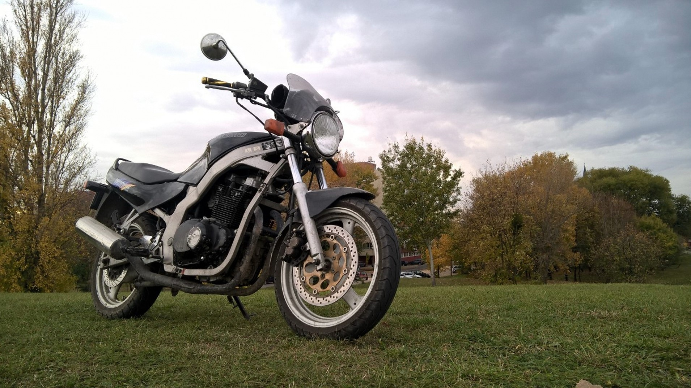
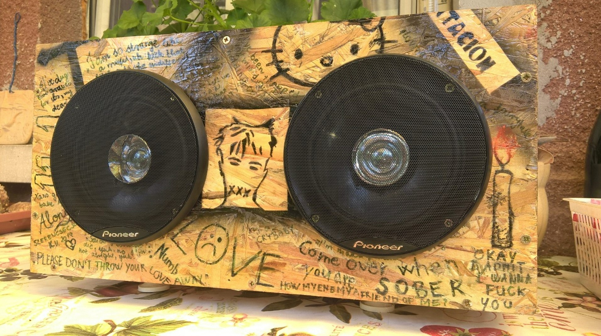

Ahogyan már korábban is említettem
szertek motorozni. A bal oldali motor egy Jawa 250 559 1971-ból
Csehszlovákiából.Ő volt az első nagymotorom, 2017 decemberében vettem,
akkor még működésképtelenül. Elhatároztam , hogy megcsinálom,néhány
napra rá már működőképes volt.Azonban hamar kiderült, hogy rengeteg
rejtett hibája van. Teljes motor generált igényelt. Mikor azzal készen
voltam, már megbízhatóan üzemelt.Nagyon szerettem ezt a motort,
szerintem ez egyik leggyönyörűbb, amit valaha gyártottak . Ahogyan már korábban is említettem
szertek motorozni. A bal oldali motor egy Jawa 250 559 1971-ból
Csehszlovákiából.Ő volt az első nagymotorom, 2017 decemberében vettem,
akkor még működésképtelenül. Elhatároztam , hogy megcsinálom,néhány
napra rá már működőképes volt.Azonban hamar kiderült, hogy rengeteg
rejtett hibája van. Teljes motor generált igényelt. Mikor azzal készen
voltam, már megbízhatóan üzemelt.Nagyon szerettem ezt a motort,
szerintem ez egyik leggyönyörűbb, amit valaha gyártottak .
Ő pedig
egy Suzuki GS 500 1998-ból. Ő mondható az első igazi
nagymotoromnak.2018 márciusában vettem meg, rendkívül jó állapotban.Rajta csak egy olajcserét kellet csinálnom, és semmi baj nem
is volt soha. Azért szerettem őt, mert rendkívül megbízható volt, és
felettébb gyors.
|
A képen látható bluetooth hangszóró az
elsó nagyobb projektem. A legkisebb darabaiig saját tervezésű és
gyártású.A hangja,hangminősége felér a felsőbb kategóriás
hangszórókéhoz.Nagyon élveztem ezt a projektet, hiszen mindig is
szerettem alkotni, és imádom azt az érzést, mikor a semmiből készül egy
működő eszköz.A minták, idézetek, amik rajta találhatóak a kedvenc
rappereimtől vannak, a kedvenc használati tárgyaik,eszközeik, a rájuk
legjellemzőbb dolgok találhatók meg.
|
|